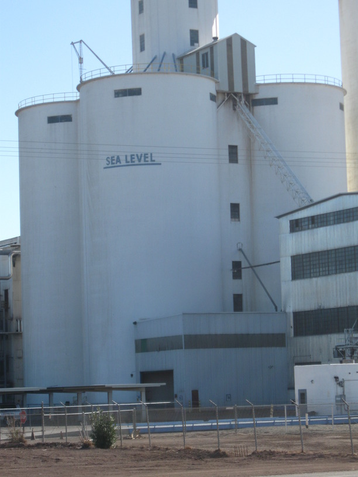

3 Dec 2008, Ocotillo, CA
Today I crossed the Imperial Valley. It is large, flat, below sea level, full of industrial farms, and quite smelly in places.
Two cyclists overtook me near Imperial. They were riding fixes. The guy asked me about my trip—he and his brother have apparently kicked around the idea of a cross country tour. I gave the AC maps high praise.
I had lunch at a little hole-in-the-wall Mexican place near the El Centro Naval Air Facility. They had a personalized signed photo of the Blue Angels on the wall & there were some F-18 pilots having lunch there (one had a patch on his shoulder that said "1000 hours F-18").
Camping tonight at an RV park. Actually, I'll be sleeping in the rec room. Nice people, free, clean shower, laundry, altogether a good stop.
